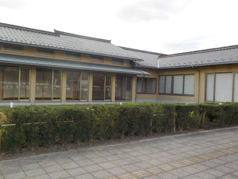

そば縁は閉店したままでした。
2020/10/30

閉店してからしばらく経ちましたが、そのままですね。
伝承館の横だし、駐車場もいっぱいあるし、公園もあって条件がいい場所なので、すぐに新店舗にリニューアルするのかと思ってました。
島根県出雲市浜町517-1
閉店しました。
2020/10/30

閉店してからしばらく経ちましたが、そのままですね。
伝承館の横だし、駐車場もいっぱいあるし、公園もあって条件がいい場所なので、すぐに新店舗にリニューアルするのかと思ってました。
2005/06/26
出雲文化伝承館の隣りにあるそば縁に行きました。
（伝承館内にあるそば処とは違うところです。近くにそば屋が2店あってまぎらわしいですね。）
食べた感想ですが、私が普段食べてる出雲蕎麦とは味も食感も全然違っていて、これを出雲そばって言っていいの？って感じでした。 出雲ソバっていっても色んなタイプがあるんですね。 確かに地方によって味も違うし、「これが伝統的な出雲そばです。」って話を聞いたことがないので、そばの殻が入ってて黒い麺だったらなんでもアリなのかな。
一番代表的な出雲そばって何処のなんでしょうね？